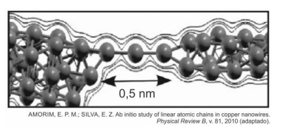

102. (ENEM PPL 2014)
Recentemente foram obtidos os fios de cobre mais finos possíveis, contendo apenas um átomo de espessura, que podem, futuramente, ser utilizados em microprocessadores. O chamado nano fio, representado na figura, pode ser aproximado por um pequeno cilindro de comprimento 0,5 nm (1 nm = 10⁻⁹ m). A seção reta de um átomo de cobre é 0,05 nm² e a resistividade do cobre é 17 Ω·nm. Um engenheiro precisa estimar se seria possível introduzir esses nanofios nos microprocessadores atuais.

Um nanofio utilizando as aproximações propostas possui resistência elétrica de:
1) Fórmula usada:
2) Valor numérico obtido:
Assinale a alternativa correta: